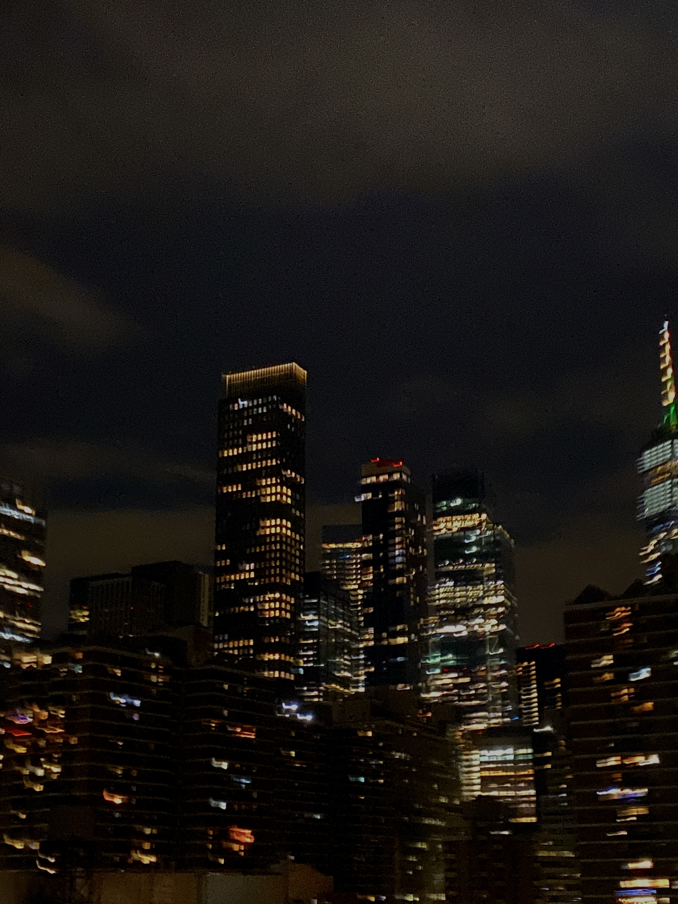
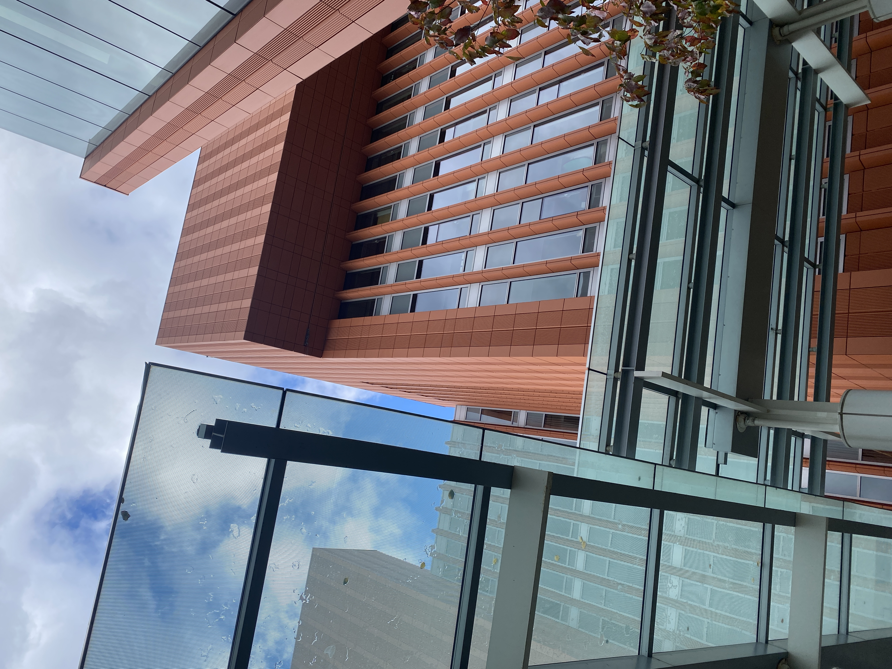
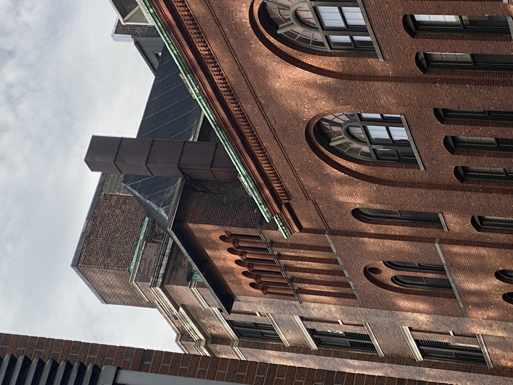
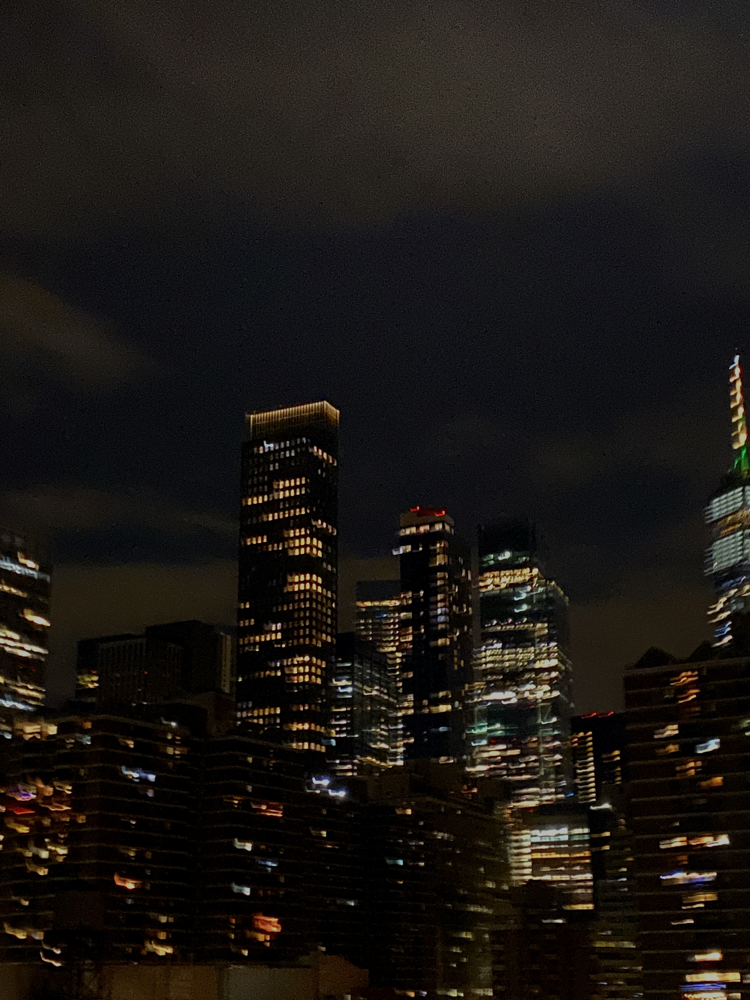
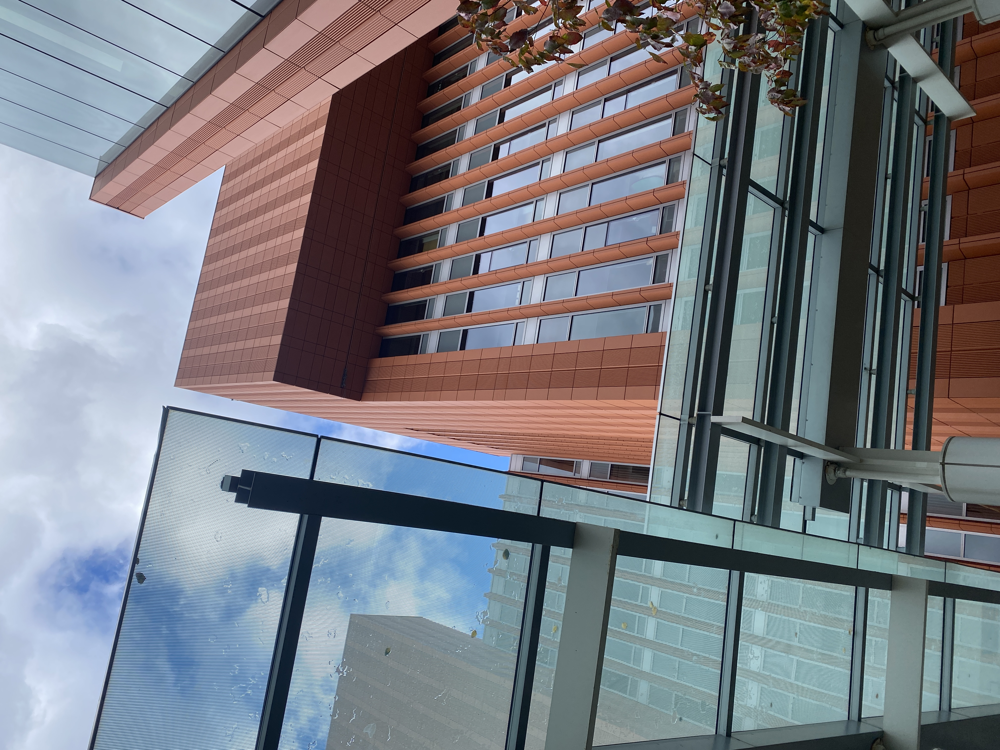
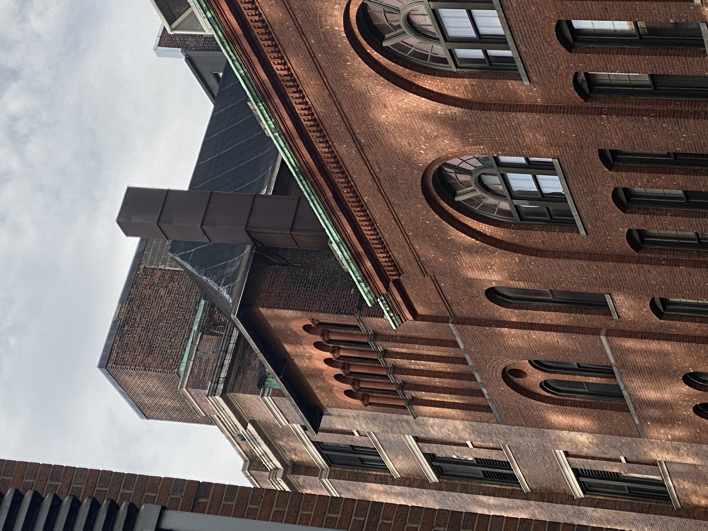
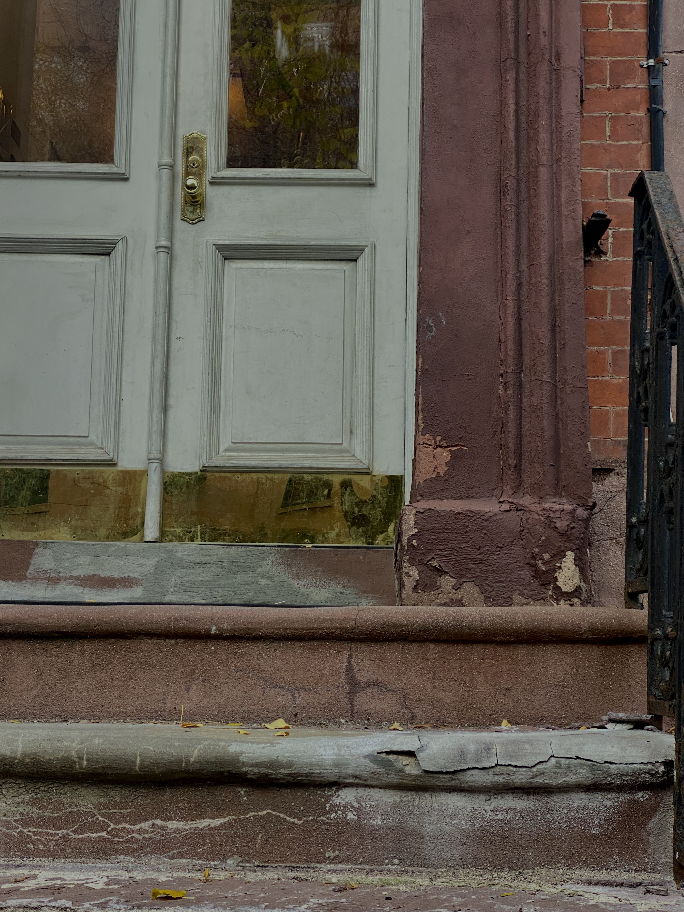
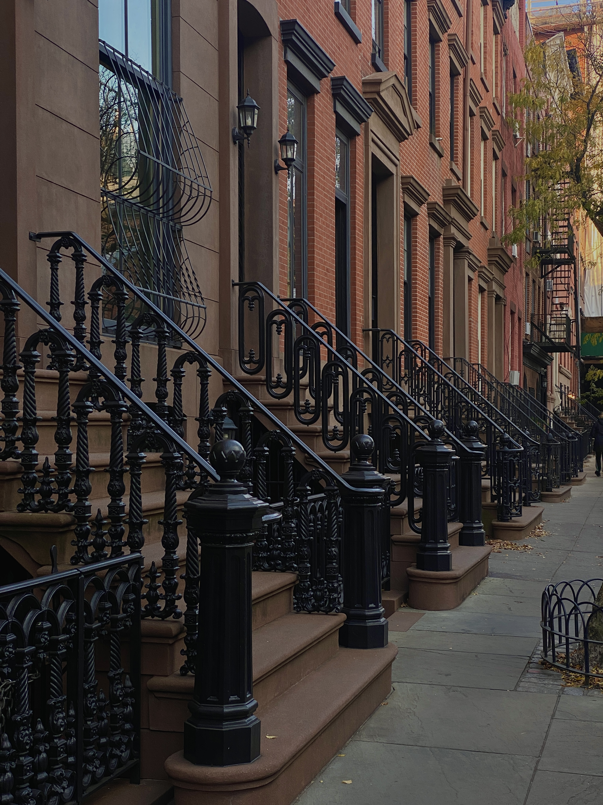
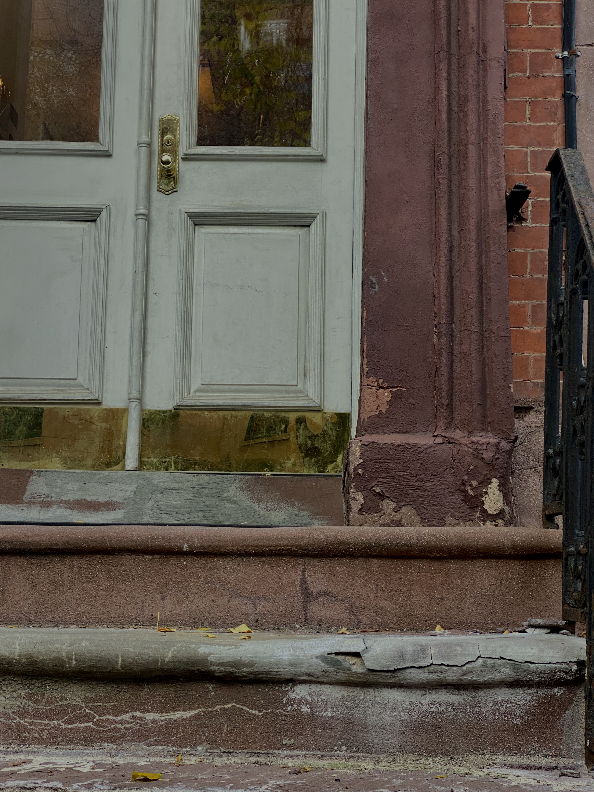
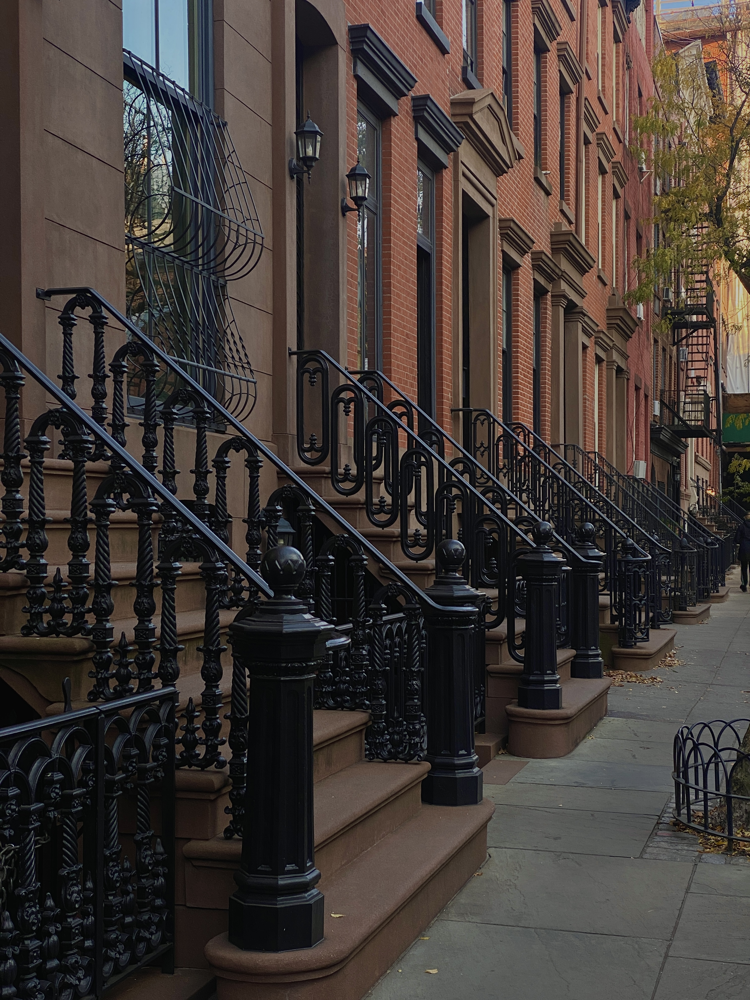

These are some urban photographs I took while travelling. Some of these photos are from Michigan, some from Arizona, and some are from NYC. I like taking urban photographs in every city I visit. I also enjoy traveling and exploring different cities. Taking photographs of these cities is a great way to keep the memories with me and look back at them to remember my trips.
I especially like taking photos of each cities' architecture as it says a lot about the culture as well as history of a certain city. In addition to architecture, streets, people, cars, landscape, parks and other aspects of urban life also can reveal a certain city's identity and culture. That's why, I like capture these aspects of cities' while travelling.

 






 


